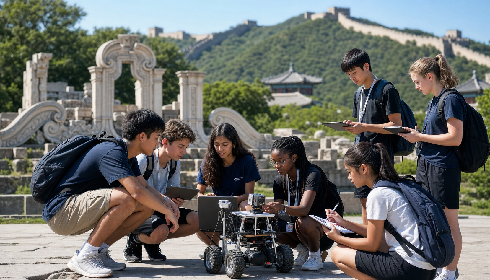
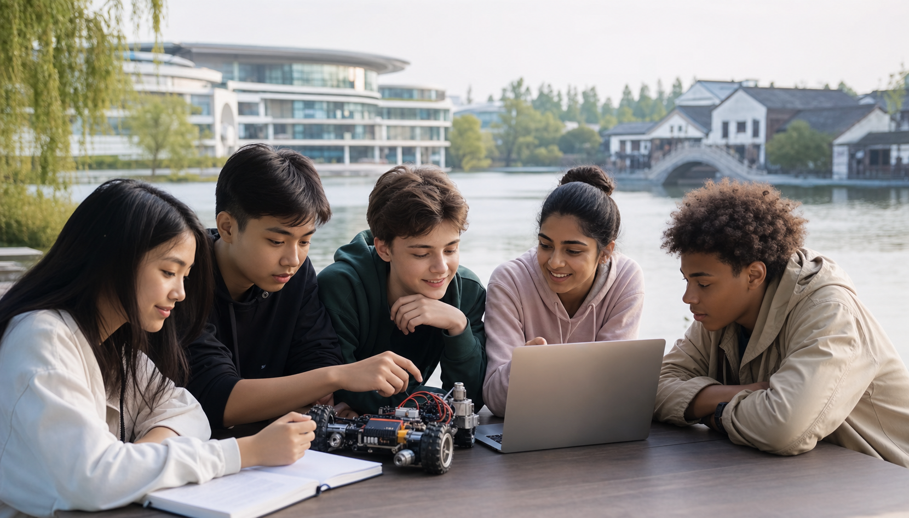

Day 1 Sat
Day 1 SatArrival and Safety Setup
Airport or station pickup, check-in, safety briefing, room setup, team icebreakers, and camp expectations.
20-Day China AI + Robotics Summer Camp
A hands-on AI and robotics camp for teenagers: two weeks of classes and team engineering studio, Friday-Saturday road trips, optional Sunday deep dives, university visits, a robotics competition, final showcase, and a closing dinner.
Students learn robotics foundations, AI literacy, sensors, control logic, teamwork, debugging, and presentation skills. Each team builds toward a robot challenge and final showcase instead of only attending lectures.
Saturday arrival, Sunday warm welcome, two learning weeks, Friday-Saturday road trips, Sunday rest or optional deep-dive activities, then robotics competition, final showcase, Shanghai discovery, and return preparation.
Day 1 SatAirport or station pickup, check-in, safety briefing, room setup, team icebreakers, and camp expectations.
 Day 2 Sun
Day 2 SunOpening ceremony, campus or neighborhood orientation, team formation, robotics kit introduction, and welcome dinner.
 Day 3 Mon
Day 3 MonRobot structure, motors, sensors, safety rules, team roles, and first build challenge.
 Day 4 Tue
Day 4 TueBlock or Python-style logic, movement control, loops, conditionals, debugging habits, and testing logs.
 Day 5 Wed
Day 5 WedComputer vision concepts, data bias, model thinking, responsible AI, and sensor-based mini tasks.
 Day 6 Thu
Day 6 ThuTeams define strategy, improve chassis design, assign roles, and prepare road-trip observation tasks.
 Day 7 Fri
Day 7 FriUniversity visit or city technology observation. Route may include Xi'an Jiaotong, Fudan, SJTU, Zhejiang University, Xiamen University, Tsinghua, or Peking University.
 Day 8 Sat
Day 8 SatScenic learning connected to city culture and engineering thinking: landmarks, museums, ancient towns, coastlines, or heritage sites.
 Day 9 Sun
Day 9 SunRest, self-study, supervised project catch-up, or optional activities such as maker workshop, calligraphy, tea, sport, or local culture.
 Day 10 Mon
Day 10 MonTeams define the competition mission, scoring strategy, field constraints, and technical risks.
 Day 11 Tue
Day 11 TueLine tracking, obstacle detection, camera or distance sensing, calibration, and data notes.
 Day 12 Wed
Day 12 WedIterative testing, version notes, failure analysis, repair routines, and peer review.
 Day 13 Thu
Day 13 ThuTeams prepare engineering notebooks, demo scripts, robot pitch decks, and road-trip learning links.
 Day 14 Fri
Day 14 FriSecond university or innovation visit, based on selected city route and confirmed availability.
 Day 15 Sat
Day 15 SatScenic exploration: Terracotta Warriors, Suzhou or Wuxi, West Lake and Xitang, Xiamen coastal sites, Great Wall, or Old Summer Palace.
 Day 16 Sun
Day 16 SunOptional deep-dive activity, robot repair time, final testing, showcase rehearsal, and material check.
 Day 17 Mon
Day 17 MonRobot challenge rounds, judging, engineering notebook review, team pitch, final showcase, certificates, mentor feedback, and closing dinner.
 Day 18 Tue
Day 18 TueShanghai city highlights, science and technology museum or zoo if available, culture walk, and light shopping time.
 Day 19 Wed
Day 19 WedPack luggage, collect project files, export photos and videos, confirm flights, review certificates, and prepare transfers.

Day 20 FlexDeparture according to flight schedule. Late Day 19 or early Day 20 departures can be accommodated in the final plan.
Each route keeps the same AI + Robotics academic spine. Friday-Saturday road trips can combine university visits, innovation exposure, and scenic learning.
 Xi'an
Xi'anVisit Xi'an Jiaotong University for engineering inspiration, then explore the Terracotta Warriors and historic city culture.
 Shanghai
ShanghaiExplore Shanghai city views, visit Fudan University and Shanghai Jiao Tong University, with Suzhou and Wuxi road trip options.

HangzhouVisit Zhejiang University and Westlake University, then explore West Lake and Xitang water town.
 Xiamen
XiamenVisit Xiamen University and nearby famous scenic spots reachable within a few hours by car, based on season and logistics.
 Beijing
BeijingVisit Tsinghua and Peking University, then explore the Great Wall, Old Summer Palace, and other major Beijing landmarks.
The final Monday is not just a ceremony. It validates learning through robot performance, design explanation, teamwork, and communication.
Teams compete in a mission such as navigation, delivery, line tracking, obstacle avoidance, or a route-specific field challenge.
Judges review notebooks, iteration choices, debugging notes, responsible AI thinking, and team role distribution.
Students present their robot, demo video, road-trip insight, and improvement plan to peers, mentors, and invited guests.
Certificates, mentor comments, photo moments, family-ready highlights, and farewell dinner.
Share student age range, group size, preferred dates, target route city, robotics experience level, dietary and health notes, and whether Sunday optional deep-dive activities are allowed.